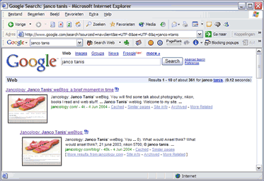

Nicer google results
June 6, 2004 | Comments (0)
I found a real nice plugin for google called MoreGoogle. I promises to be free of cost and spyware. This plugin shows a little thumbnail of each of the search results (when possible).

More-google screen capture for search on “janco tanis”
Unfortunately this does not work with the FireFox browser. I feeling that I’m using this browser more and more instead of IE6. The killer feature might be tabbed browsing. I use this quite a lot as I tend to open my search results one by one in its own tab. After the tabs are loaded I can just check the results one by one and don’t get lost about what I’ve seen and what not. The other nice feature is the BlogLines notifier extension by Chad Everett. This gives me a one click to load my subscribed news/blogs in a new tab.
“Those are my principles. If you don't like them I have others.” — Groucho Marx (1895-1977)
Copyright © 2003-2007 Janco Tanis. All rights reserved.
XHTML, CSS, RSS feeds. Powered by Movable Type. Hosted@Home @Slicehost with a domain by hostway.
XHTML, CSS, RSS feeds. Powered by Movable Type. Hosted
Comments
And where can U find this plug-in?
good question, I forgot to add a link, its done now...
Here is a Firefox plugin that does the same thing as MoreGoogle for IE.
http://update.mozilla.org/extensions/moreinfo.php?application=firefox&id=211&vid=506